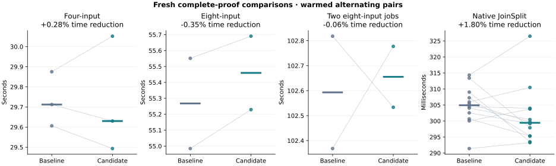
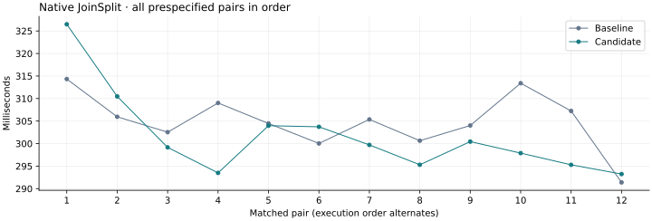

21 October 2026 · Tesla V100-PCIE-32GB · fixed 250 W power cap.
Fresh comparison of the source-matched pass-8 matrix_carry baseline and round_add candidate. Previous evidence and independent CPU verifier binaries are preserved.
Rejected the canonical round-constant addition candidate and restored the exact pass-8 optimized source. Matched row-hash event totals improved 1.99% for four-input aggregation and 2.93% for native proving, but only 3 of 7 aggregation pairs improved. Eight-input median latency regressed 0.35%; concurrent median latency regressed 0.06%. Four-input median latency improved 0.28%, and native median latency improved 1.80% (8 of 12 pairs). Sampled peak VRAM increased by 428 MiB for four-input aggregation and 920 MiB for concurrent jobs. These tradeoffs do not justify changing the current prover. All candidate tests and independent proof audits passed; every sample and the rejected patch are retained.
| Workload | Baseline median (s) | Candidate median (s) | Pooled reduction | Median paired reduction | Paired wins |
|---|---|---|---|---|---|
| Four-input aggregation | 29.712295 | 29.630083 | +0.28% | +0.28% | 2/3 |
| Eight-input aggregation | 55.267896 | 55.459622 | -0.35% | -0.35% | 0/2 |
| Two concurrent eight-input jobs | 102.593129 | 102.655379 | -0.06% | -0.06% | 1/2 |
| Native JoinSplit | 0.304917 | 0.299436 | +1.80% | +1.15% | 8/12 |


Poseidon round constants are uploaded using as_canonical_u64. In the evaluated candidate, the three round-constant addition sites use a helper that folds one carry on the existing NVIDIA V100 capability-7.0 path. General field addition is unchanged. Other devices call the original general addition routine.
For arbitrary unsigned 64-bit a and canonical b ≤ p − 1, the sum is at most 2⁶⁴ + p − 2. If it carries, the wrapped sum is at most p − 2. Adding 2³² − 1 yields at most 2⁶⁴ − 2, so a second overflow correction is unnecessary. The full carry chain remains inside one assembly block.
The device gate, NTT source and scheduling, allocations, proof parameters, verifier and fresh randomness are unchanged. Portable behavior was checked after inlining the trivial wrapper.
src/gpu.rssrc/gpu/arithmetic_tests.rs| Workload | Kernel category | Baseline (s) | Candidate (s) | Reduction |
|---|---|---|---|---|
| Four-input aggregation | lde_ntt | 5.638522 | 5.634024 | +0.08% |
| Four-input aggregation | lde_absorb | 4.149285 | 4.066716 | +1.99% |
| Four-input aggregation | device_extension_quotient | 2.050568 | 2.047581 | +0.15% |
| Native JoinSplit | lde_ntt | 0.010314 | 0.010411 | -0.95% |
| Native JoinSplit | lde_absorb | 0.012004 | 0.011653 | +2.93% |
| Native JoinSplit | device_extension_quotient | 0.001142 | 0.001137 | +0.45% |
Profile sums are nonadditive and include instrumented execution. Both row-hash kernels report zero private bytes; that metadata is not a sampled VRAM measurement.
| Variant | Faster configurations | Kernel-time reduction range |
|---|---|---|
| carry_neg | 0/6 | -8.19% to -2.40% |
| shift_reduce | 0/6 | -20.53% to -11.11% |
| mul_madc | 0/6 | -8.23% to -1.49% |
| round_add | 6/6 | +0.69% to +2.04% |
| square_portable | 0/6 | -11.05% to -5.03% |
| square_ptx | 0/6 | -7.61% to -2.07% |
| power_leading | 3/26 | -4.62% to +0.28% |
| scale_serial | 11/26 | -4.92% to +1.00% |
| scale_parallel | 6/26 | -5.00% to +3.16% |
| carry_mask | — | Failed arithmetic oracle; discarded before timing |
The round-constant addition candidate improved all six isolated hashing shapes but was rejected after the complete-proof and resource comparisons. The arithmetic and round screens each checked 266,369 input pairs against Python integer arithmetic and 577 complete Poseidon permutations against a separate CPU implementation; complete outputs matched for all timed hashing shapes.
The direct carry-to-mask experiment failed its arithmetic oracle before timing. The valid carry conversion, shift reduction, explicit multiword multiplication and specialized squaring variants were slower. Leading-bit exponentiation improved standalone power kernels by about 7–11%, but regressed most complete NTT shapes. Serial and parallel row-scale power tables produced mixed NTT results. These experiments were rejected.
The exponentiation screen checked 266,369 powers. Its NTT screen checked 56 CPU-oracle configurations; the scale-table screen checked 84. Both covered forward/inverse transforms, plain/shared paths, small direct-DFT cross-checks and complete output comparison for 26 timed shape/direction combinations. An initial power harness reused the wrong kernel handle and failed before producing a completed screen. A stale controller label also failed before launching validation or proof measurements. Both setup failures were corrected and their logs retained.
46 targeted tests passed, on the evaluated candidate, including the new canonical-right-operand boundary oracle on both fast and portable paths. CPU-only and GPU-without-tuning compilation passed. Independent CPU audits verified 60 outputs representing 192 fresh benchmark proofs. All required GPU stages were present, root/proof hashes were unique, and native public-input tamper checks passed.
| Test group | Passed |
|---|---|
| field-device-guard | 1 |
| scalar-absorb-oracle | 1 |
| parameter-guard | 1 |
| tuning-policy | 3 |
| witness-host | 6 |
| witness-budget | 1 |
| ntt-local-memory | 5 |
| ntt-and-tuning-gpu-oracles | 4 |
| arithmetic-oracles | 11 |
| dft-and-commitment-oracles | 6 |
| witness-parity-reference | 2 |
| witness-parity-fusion | 2 |
| witness-rejection | 2 |
| native-wallet-entrypoints | 1 |
| Workload | Baseline GPU GiB | Candidate GPU GiB | Baseline RSS GiB | Candidate RSS GiB |
|---|---|---|---|---|
| Four-input aggregation | 11.996 | 12.414 | 1.238 | 1.239 |
| Eight-input aggregation | 8.512 | 8.512 | 1.233 | 1.237 |
| Two concurrent eight-input jobs | 17.020 | 17.918 | 2.351 | 2.428 |
All resource budgets and the power cap are unchanged. The short native workload can finish between GPU sampler ticks; a recorded zero is not evidence of zero VRAM use. Reported private-byte and sampled-memory measurements are different quantities.
First source-use JIT profiles and ordinary warmups are retained separately. Builds and competing GPU work did not overlap proof measurements. All prespecified pairs, including slower candidate samples, are retained.
Structured measurements and source pins · Rejected candidate source patch · Controller, source and measurement archive
GPU and CPU binary hashes are in the campaign manifests. The archive excludes large executables and proof binaries. Final integrity checks cover the frozen evaluated candidate, the restored baseline worktree, measurement JSON, report artifacts and the previous campaign’s immutable evidence. The selected source is identical to the previously tested pass-8 build; no candidate source changes remain in the worktree.
python3 benchmark-results/gpu-extensive-20261021-pass9/campaign.py four round_add replay-01 python3 benchmark-results/gpu-extensive-20261021-pass9/wallet.py sample round_add replay-01
These commands create fresh proofs and repeat CPU auditing in the recorded V100 environment.